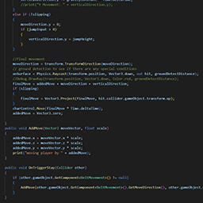
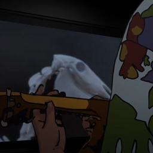
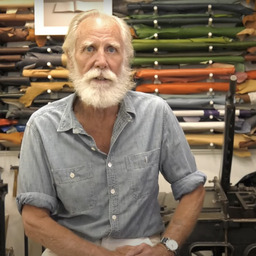
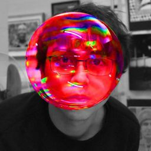
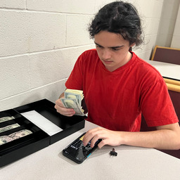
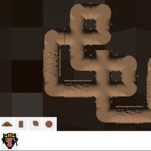
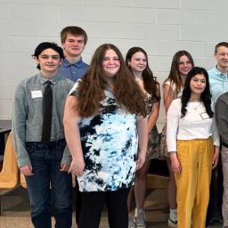
Starting out in LTV's summer intern program before a quick promotion to editor, I create short form content out of LTV productions and edit interviews.
Working with the East Hampton Star, I digitized stories from the weekly paper for their website and constructed two weekly newsletters consisting of highlights from the paper.
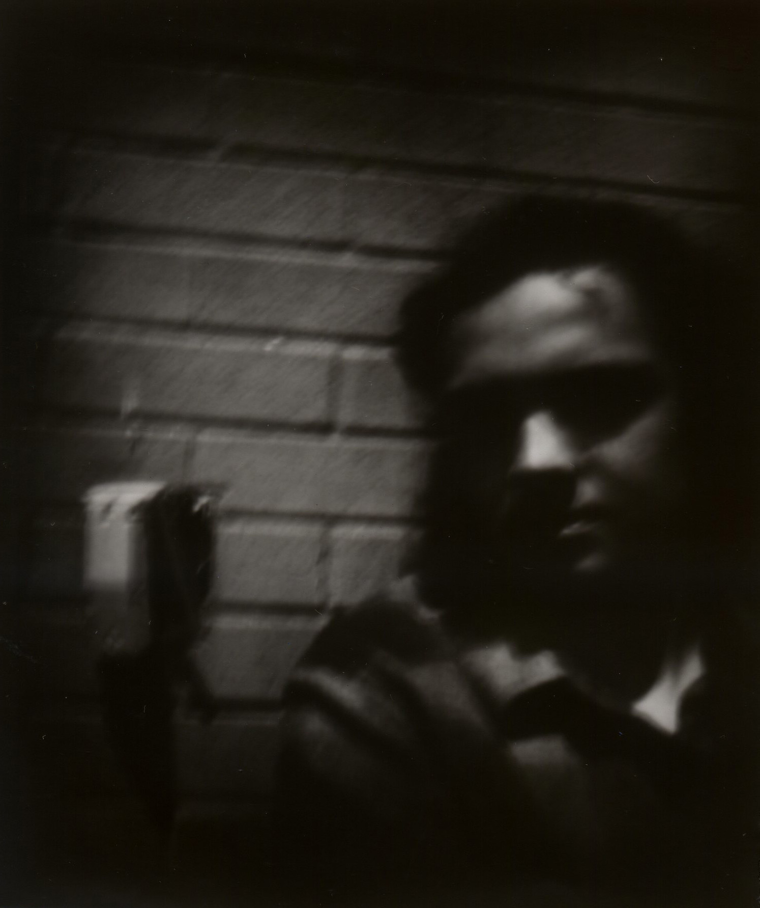
A portrait of myself that I took to test my homemade pinhole camera (More info in "Projects" section!)
- C++
- C#
- Java
- OpenGLSL
- Python
- Arduino
- Javascript
- HTML
- CSS
- Lua
- GDScript
- Luau
- Git
- VS Code
- NGINX
- Docker
- Unity
- Godot
- Processing
- IntelliJ
- Arduino IDE
- Fabric
- Roblox Studio
- Forge
It's difficult to narrow my programming skills down into a paragraph, but the essentials of what I want to convey are that I am a highly versatile and adaptable individual. I am an especially great asset in this field because I learn quickly and I work with great passion and efficiency.
In addition to the technical skills that I've fostered through my work at LTV, I use deliberate editing to enhance the stories told in my personal projects. With years of experience using software such as Premiere Pro, Davinci Resolve, and Blender, if I have my mind set on creating a project, I have the toolset to achieve my goal. Below is a 30 second sample that gives some insight onto my editing process/mindset.
While I had prior experience with videography from personal projects,
participating in the LTV Summer Internship greatly aided me in honing my skills.
Rolling video or speeding audio for the intern project's interviews taught me the intricacies
of shot framing as well as the technical handling of advanced camera and audio equipment.
I've attached
one notable example of my videography below. In the following interview with Paul Vogel, a local
book binder, I was manning the camera for a part of the interview and handling audio for the remainder.
From a young age, my dad would take me out at sunrise for nature photoshoots in the Hamptons. I quickly grew into my own passion for photography, experimenting with both digital and analog mediums as I developed my artistic persona. While I can at times take a methodic approach to my projects, I often find myself taken over by inspiration for a composition.
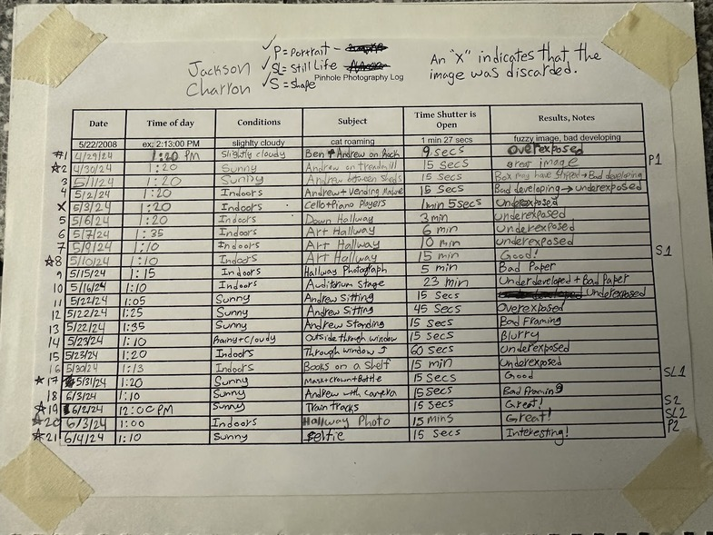
A logbook I kept when I was practicing pinhole photography
(More info in "Projects" section!)
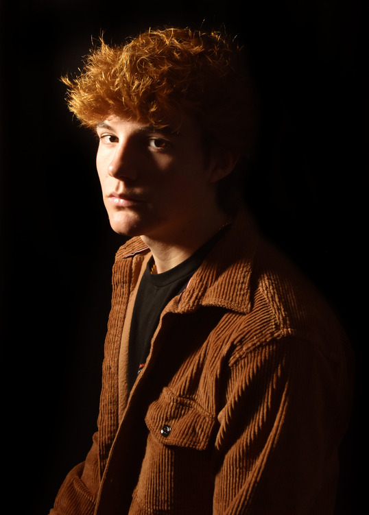
This portrait was exhibited in the Parrish Art Museum
When I design websites, functionality is always my first priority. Despite this,
I aim to strike a healthy balance with aesthetics. In my opinion, while the main
purpose of a website is to share information, the layout and look of a website can
completely change the way that such information is absorbed.
Below is a preview of one of my web design projects.
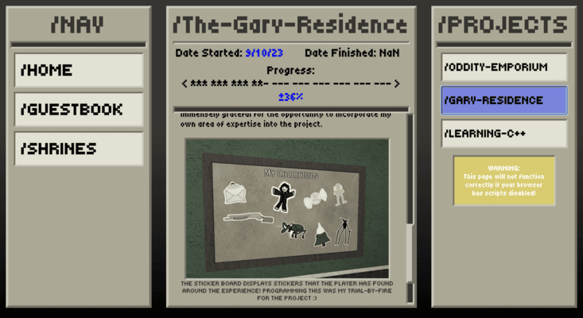
As a member of the Robotics club for all four of my years in highschool, I ran for president senior year to shape the club in a way that my club members and I believe will be beneficial for the new generation of robotics enthusiasts at our school.
As one of Astronomy Club's founding members back in 2023, I ran for treasurer my senior year to ensure that our club has funding for our outings where we learn about and admire the cosmos. As treasurer, I work closely with all club officers to plan fundraising opportunities and realize our goals.
I believe that at its core, game development is one of the most complex, multimodal fields in which one can immerse themselves. Not only does creating a video game require a deep knowledge of programming, it also requires a skillset in fields spanning from design and 3D modeling to music composition, world-building, and advanced mathematics. Over the years, I've created a countless number of game development projects. Each one has exposed me to this world of knowledge in a new manner, fostering my abilities as a well-rounded creative individual.
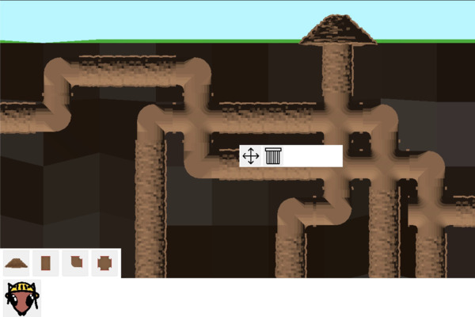
A screenshot from a simulation I've been working on about managing an ant colony.
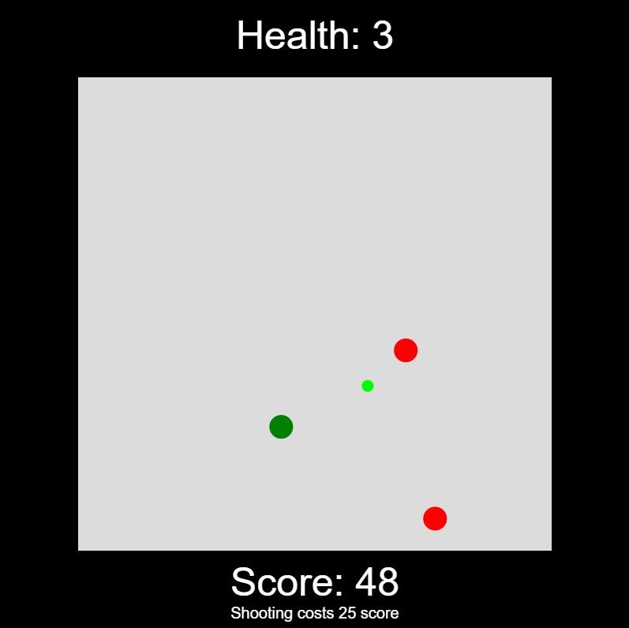
A game that I made in a couple of hours as a refresher for Javascript programming
Consistently thriving in the most advanced courses offered at my school, it's safe to say that I'm a strong student. However, I believe that being a student means more than simply learning from an individual or institution. I believe that to become a truly well-rounded citizen of the world, one must engage with the vast and diverse cultures that it offers first-hand. In pursuit of this ideal, I spend a great amount of my time solo-travelling across the country. In addition, I've travelled beyond the borders of the U.S. to Quebec and Montreal in order to better appreciate French-Canadian culture in the hopes of furthering my knowledge of the French language.
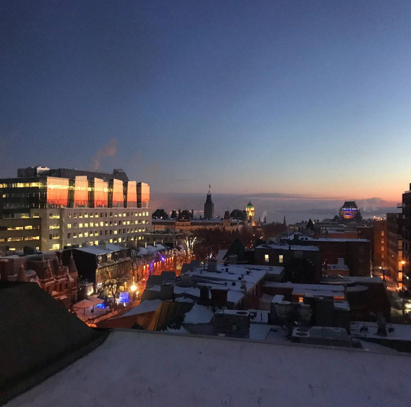